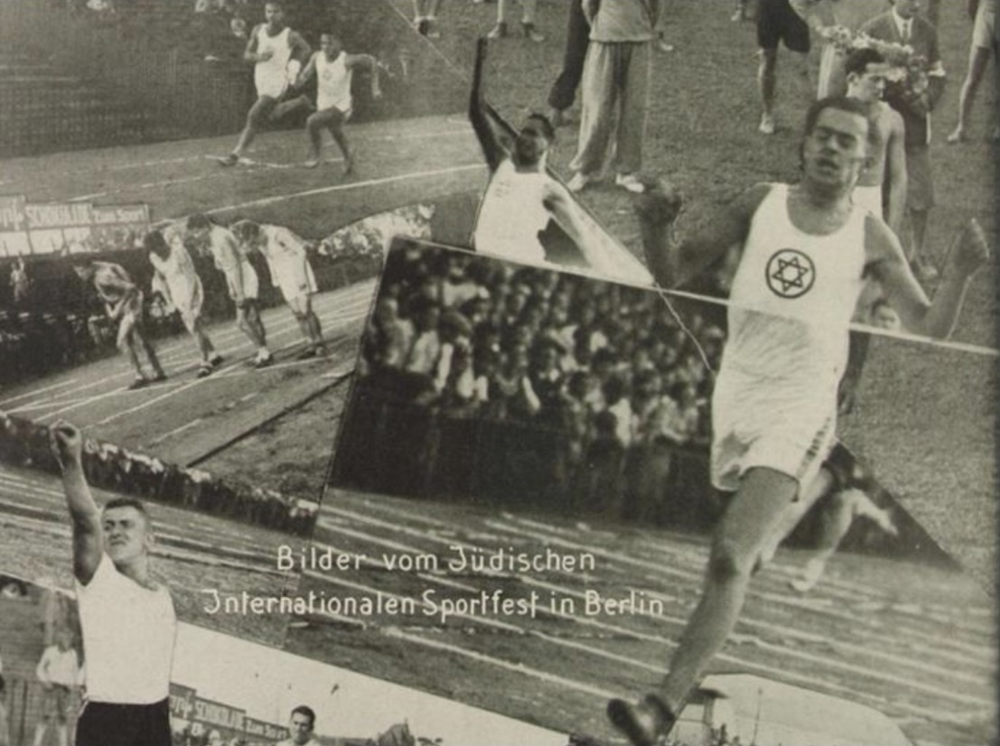
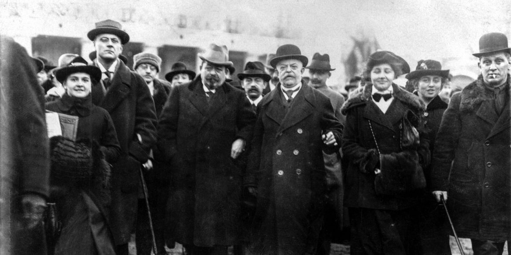
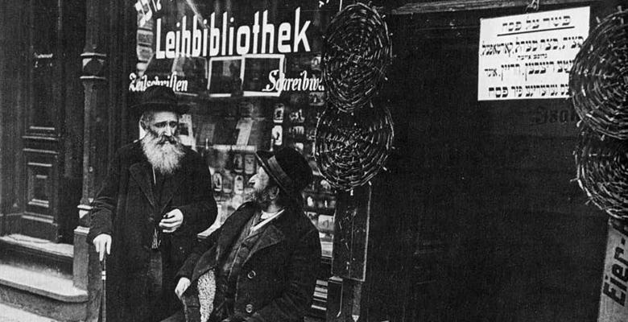
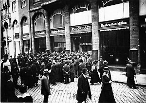

Weimarer Republik – ein Überblick
Die jüdische Bevölkerung in der Weimarer Republik war vielfältig und engagiert – von Künstlern bis zu Wissenschaftlern, Politikern und Unternehmern.
Von: , , ,
Die Weimarer Republik (1919–1933) war geprägt durch demokratische Neuerungen und kulturelle Blüte. Die jüdische Bevölkerung spielte in dieser Zeit eine bedeutende Rolle – als Unternehmer, Künstler, Wissenschaftler und Politiker. Trotz vieler Beiträge zur Gesellschaft wuchs gleichzeitig die antisemitische Stimmung. Diese Seite dokumentiert die vielfältigen Leistungen und Herausforderungen dieser historischen Epoche.
Kultur, Alltag, Integration.
Beispiele: Bertolt Brecht (Dramatiker), Hannah Arendt (Philosophin), Kurt Weill (Komponist).
Berlin war in der Weimarer Republik ein Zentrum jüdisch-muslimischer Begegnungen. Jüdinnen und Juden waren rechtlich gleichgestellt und aktiv im gesellschaftlichen Leben. 1925 lebten ca. 564.000 Juden in Deutschland (≈ 0,9 % der Bevölkerung).
Berufe, Betriebe, Handel.
Beispiele: Kaufhäuser wie Tietz und Wertheim, Bankhaus Mendelssohn, IG Farben (Mitbegründer).
Rund 1.500 Personen arbeiteten Ende der 1920er Jahre in Einrichtungen der jüdischen Gemeinde. Es gab eigene Schulen, Krankenhäuser, Sportvereine und Bibliotheken.
Beteiligung und Herausforderungen.
Beispiele: Hugo Preuss (Verfassungsberatung), Walther Rathenau (Industrialist & Außenminister), Otto Landsberg (SPD, Ratepublik Bayern).
In der Weimarer Republik Gleichberechtigung. Ab 1933 begann mit der Nationalsozialistische Deutsche Arbeiterpartei die systematische Verfolgung.
Innovation und Forschung.
Beispiele: Albert Einstein (Physik), Sigmund Freud (Psychologie), Paul Ehrlich (Medizin & Chemie).
Zeitungen und Verlage.
Beispiele: Rudolf Mosse (Mosse-Verlag), Leopold Ullstein (Ullstein-Verlag), Alfred Kerr (Theaterkritiker).
1919 Gründung der Hochschule für die Wissenschaft des Judentums als wichtiges Forschungs- und Bildungszentrum.
Film, Malerei, Literatur.
Beispiele: Fritz Lang (Film), Otto Dix (Malerei), Arnold Schoenberg (Musik), Stefan Zweig (Literatur).
Starkes jüdisches Engagement im kulturellen Leben der 1920er Jahre. Vielfalt wurde nach 1933 gewaltsam zerstört.



